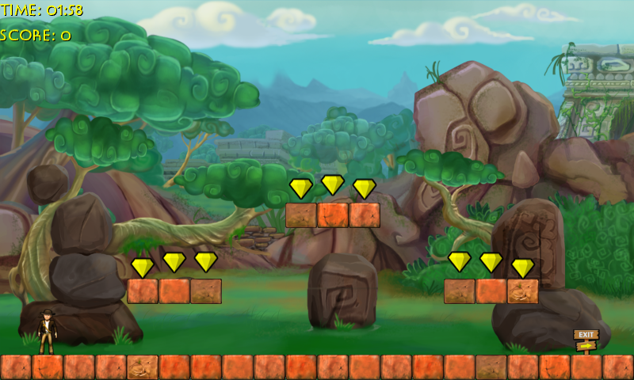

Platformer
Ported from Microsoft's XNA 4.0 Platformer Starter Kit.
Source for this sample on GitHub ↗

Play ▸Opens in a new tab and runs in this browser. Click the canvas first so it receives the keyboard and starts audio.
About this sample
The Platformer Starter Kit is a self-contained XNA game with three levels, animated sprites, collectible gems, roaming enemies, music and sound effects. It demonstrates falling and jumping physics, tile collisions, scoring, a level timer and the transition to the next level.
Collect gems for points, avoid enemies and reach the exit. If the player dies or time runs out, press Jump to retry. The original also supports gamepad and Windows Phone tilt/touch input; this browser build retains the gamepad path alongside the keyboard controls.
Controls
| Action | Keyboard | Gamepad |
|---|---|---|
| Run left/right | A/D or arrow keys | Left stick or D-pad |
| Jump / retry | Space, W or ↑ | A |
| Exit game | Close the browser tab | Back |